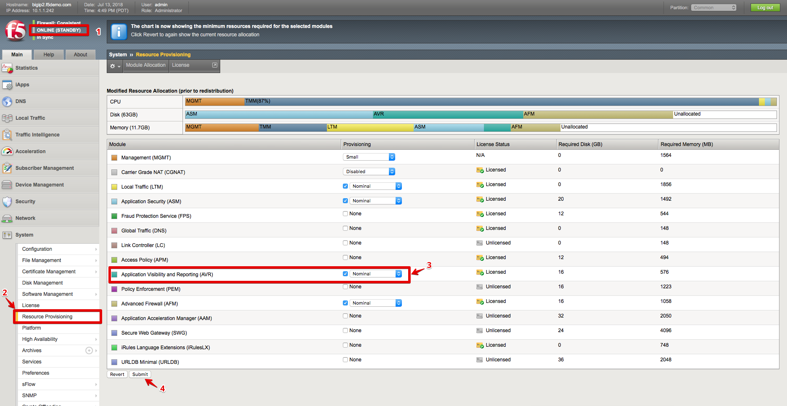

2.1.1. Task 1 – Provision the AVR module¶
Determine which BIG-IP is the standby unit by looking at the status in the top-left corner of each of the BIG-IP GUI windows. Normally BIGIP2 should be the standby, but in some cases, you may find that BIGIP1 is the standby unit.
First, on the standby unit, go to System >> Resource Provisioning
For the Application Visibility and Reporting (AVR) module, check-mark the box under the Provisioning column, and ensure the Provisioning level is set to Nominal.
Click Submit

Note
This procedure will cause services to be restarted on the BIG-IP and may cause interruption to the traffic that is passing through the unit. Hence, it is always recommended to perform this step during a maintenance window, and to start with the Standby unit first.
Once the services have been restarted, click Continue.
Repeat the above steps for the other (Active) BIG-IP unit. Note that when you do so, the Active unit will go into Standby state, and the other unit will take over as Active.